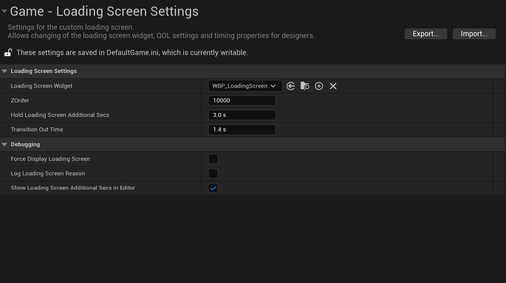

A subsystem that handles the creation and managing of loading screens during gameplay.
The created widget allows for UMG animations and clean transitions.
How did I make it?

By hooking into Core delegates provided by Unreal, we can be alerted when the Engine starts switching levels.
When this happens, we create the specified widget that is then added to the viewport and registered for updates.
Optimizations
When the screen is fully covered by the loading screen, we can enable a couple optimizations to speed up loading.
These include disabling rendering and prioritizing level streaming.
We could also tweak the ShaderPipelineCaching to help it further, but that was not done for the project.
Transitions
By allowing designers to explicitly enable the loading screen, we can add transitions to the loading screen to make it more smooth.
This is controlled through the settings, and requires that the loading screen have a minimum uptime which is enforced automatically.
A callback in the loading screen widget gives the designers a chance to play animations when transitioning in and out of the widget.
Takeaways
• Making a loading screen was simpler than I thought which is nice for a change.
• Since we have full control over the displayed widget, it could easily be made dynamic to match the game area or loading destination.
• If done again, I would look into more optimizations to get the most out of the guaranteed uptime of the loading screen.
Multilayer Game UI
What is it?
A subsystem that handles the creation and managing of loading screens during gameplay, allows for UMG animations and transition rules.
Hides level transitions and texture streaming.
How did I make it?
I worked on the many widgets and menus used for Access Acquired, both smaller ones present in world such as interaction widgets and HUD elements, and more complex menus like settings and save screens.
I was also responsible for creating the framework that allowed multi-layered widgets in the form of game HUD, menus and modals such as confirmation popups.
I worked together with our artists concepts and layouts, which I then translated into Unreals to make it work on different screen sizes and resolutions, since the game is targeted at both typical desktops and Steamdeck.
Takeaways
The project was an amazing opportunity for working in 3D, where I learned to work with developing AI, designing and creating the exciting player combat and create the overall systems required for UI and level design to be created by my team with ease.
Working with an engine like Unreal that's designed to invite other designers like graphics and level design taught me the importance of designing and creating with the team in mind, so that I can create systems and tools that are intuitive and usable for others too.
Slate UI Customization
What is it?
The Attributes use a custom Struct with it's own handwritten Slate UI.
Unreals default-generated UI has each entry under a drop-down, making it difficult to gain an overview of the attributes and required more clicks to access.
I addressed this by creating my own Slate UI, where each entry is displayed immediately with a horizontally-aligned setup.